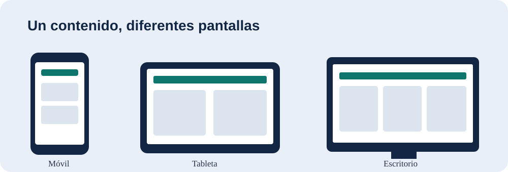

04–06 · Responsive
Diseño responsive y mobile-first
Una misma interfaz debe reorganizarse con el espacio disponible: viewport, imágenes flexibles, media queries y estilos base para móviles.
1. Viewport e imagen adaptable (diapositva 12)

La imagen utiliza max-width: 100% y height: auto; observa el comportamiento al reducir la ventana.
<meta name="viewport"
content="width=device-width, initial-scale=1">
img {
max-width: 100%;
height: auto;
}
2. Media query: una o dos columnas (diapositiva 13)
Tarjeta 1
Tarjeta 2
Tarjeta 3
Tarjeta 4
.tarjetas-media {
display: grid;
grid-template-columns: 1fr;
gap: 1rem;
}
@media (min-width: 768px) {
.tarjetas-media {
grid-template-columns: repeat(2, 1fr);
}
}
3. Mobile-first: 1 → 2 → 3 columnas (diapositiva 15)
Servicio 1
Servicio 2
Servicio 3
Servicio 4
Servicio 5
Servicio 6
.tarjetas-mobile-first {
display: grid;
grid-template-columns: 1fr;
gap: 1rem;
}
@media (min-width: 700px) {
.tarjetas-mobile-first {
grid-template-columns: repeat(2, 1fr);
}
}
@media (min-width: 1050px) {
.tarjetas-mobile-first {
grid-template-columns: repeat(3, 1fr);
}
}
Prueba en DevTools: observa el punto en que aparecen 2 y 3 columnas. Discute por qué los breakpoints deben responder al contenido, no a modelos de teléfono específicos.